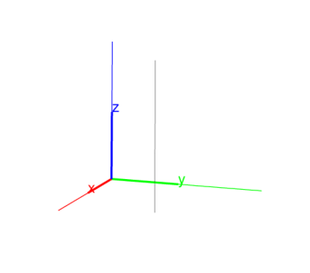
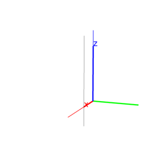
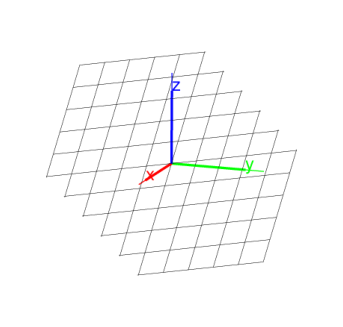
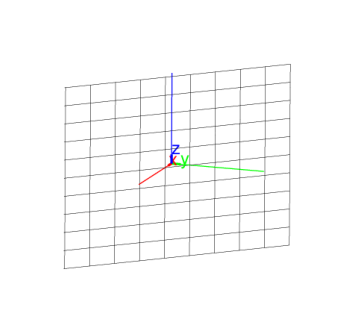

14.5.5 Parallel lines and planes in space: parallel
See Section 13.7.5 for parallel lines in the plane.
The parallel command can take its arguments in different
ways. It returns and draws a line or plane
depending on the arguments.
A point and a line.
-
parallel takes two arguments:
- parallel(P,L)returns and draws the line through P
parallel to L.
Example
Input:
parallel(point(1,1,1),line(point(0,0,0),point(0,0,1)))
Output:

Two non-parallel lines.
-
parallel takes two arguments:
L,M, two lines which aren’t parallel.
- parallel(L,M)returns and draws the plane containing
L which is parallel to M.
Example
Input:
parallel(line(point(1,0,0),point(0,1,0)),line(point(0,0,0),point(0,0,1)))
Output:

A point and a plane.
-
parallel takes two arguments:
- parallel(P,PL) returns and draws the plane through
P that is parallel to PL.
Example
Input:
parallel(point(0,0,0),plane(point(1,0,0),point(0,1,0),point(0,0,1)))
Output:

A point and two non-parallel lines.
-
parallel takes three arguments:
-
P, a point.
- L,M, two non-parallel lines.
- parallel(P,L,M)
returns and draws the plane through P that is parallel to L and
M.
Example
Input:
parallel(point(1,1,1),line(point(0,0,0),point(0,0,1)),line(point(1,0,0),point(0,1,0)))
Output:
